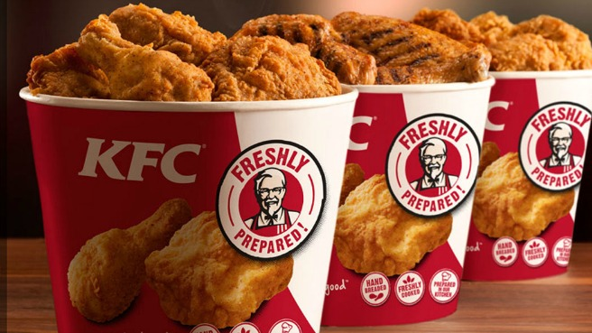
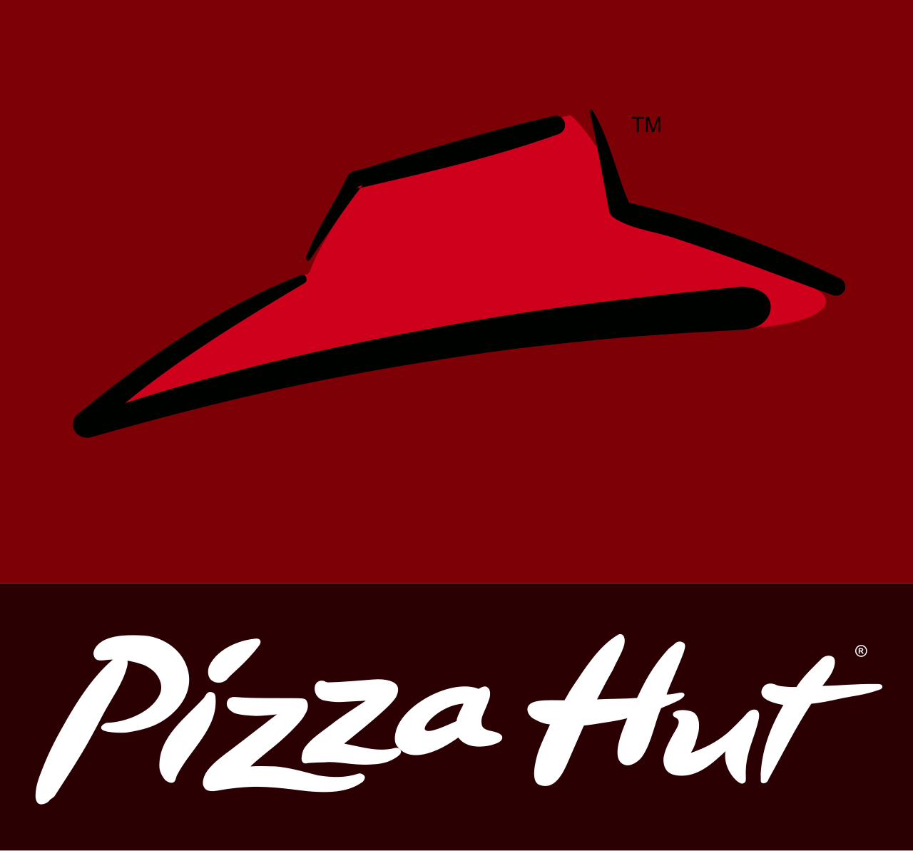
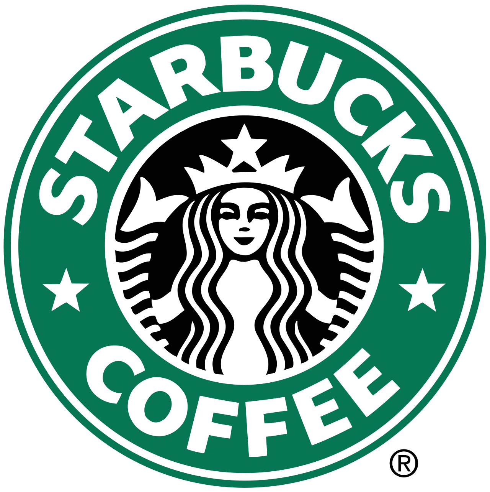
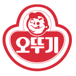

홈 > 브랜드 매거진 > KFC
KFC
KFC(Kentucky Fried Chicken)는 할랜드 샌더스 대령이 창립한 미국 기반의 글로벌 프라이드 치킨 프랜차이즈이다.
산업 분야 식음료 · 공개 등급 편집 검수 · 브랜드 평가 4.7 ★

한눈에 보는 브랜드
KFC(켄터키 프라이드 치킨)는 미국의 대표 치킨 패스트푸드 브랜드다. 창업자 할랜드 샌더스(Harland Sanders)는 1930년 켄터키주 코빈의 주유소에서 여행객에게 압력솥으로 튀긴 치킨을 팔며 명성을 쌓았고, 그 비법을 무기로 1952년 첫 프랜차이즈 매장을 열었다.
주유소 식당에서 출발해 프랜차이즈 모델로 전환한 것이 첫 번째 분기점, 1960년대 캐나다·영국 등으로 진출하며 글로벌 외식 체인으로 도약한 것이 두 번째 전환점이다. 현재 전 세계 매장 수는 3만개를 넘어섰다.
브랜드 관점
가장 큰 경쟁 구도는 햄버거 1위 맥도날드와의 패스트푸드 패권 다툼이지만, KFC는 '치킨 전문'이라는 명확한 포지션으로 차별화한다. 핵심 무기는 샌더스가 완성한 11가지 비밀 허브·향신료 배합으로, 이 레시피 자체가 강력한 브랜드 자산이자 경쟁사가 모방하기 어려운 진입 장벽이다.
운영 주체는 피자헛·타코벨을 함께 거느린 모회사 얌 브랜즈(Yum Brands) 산하이며, 최근에는 신메뉴·매장 디자인·브랜딩을 동시에 손보는 글로벌 리뉴얼과 디지털·소스 특화 매장으로 변화를 꾀하고 있다. 한국에서는 1984년 서울 종로에 1호점을 열며 진출했고, 종로점은 한때 도심 약속 장소의 상징이 됐다.
시작과 성장
창업자 할랜드 샌더스는 증기기관 화부, 보험 영업 등 여러 직업을 거친 뒤 1930년 켄터키주 코빈의 셸 주유소를 인수해 여행객에게 직접 만든 프라이드 치킨을 팔기 시작했다. 이 시기에 압력솥 조리법과 비밀 양념 배합을 가다듬었다.
사업 확장 가능성을 본 그는 1952년 유타주 사우스솔트레이크의 피트 하먼(Pete Harman)에게 첫 프랜차이즈를 내줬고, 가맹 첫해 매장 매출이 세 배 이상 뛰며 모델의 위력을 입증했다. 1960년대 들어 가맹점이 급증하자 고령의 샌더스는 1964년 브랜드의 미국 사업 권리를 투자자 그룹에 매각했고, 이후 회사는 여러 차례 주인이 바뀌며 국제 확장을 가속했다.
샌더스 본인은 흰 양복 차림의 '커넬'로 광고 모델 역할을 이어갔다.
브랜드 아이덴티티
브랜드 정체성의 중심에는 흰 양복과 검은 넥타이, 안경, 흰 수염의 창업자 커넬 샌더스 얼굴 로고가 있다. 이 인물 로고는 진정성과 손맛, 오랜 전통을 상징하며 브랜드를 의인화한다.
핵심 색상은 강렬한 빨강과 흰색으로 식욕과 활력, 친근함을 전달한다. 타깃은 가성비 좋은 든든한 한 끼를 찾는 가족·청년층 등 폭넓은 대중이며, 보이스는 유쾌하고 자신감 있으면서도 정겨운 미국식 화법을 띤다.
'It's finger lickin' good'으로 대표되는 메시지처럼 맛에 대한 자부심을 핵심 가치로 내세운다.
제품과 서비스
대표 메뉴는 11가지 양념으로 압력 조리한 오리지널 치킨과, 더 바삭하고 매콤한 핫크리스피 치킨이다. 매콤한 치킨 패티를 끼운 징거버거(Zinger), 텐더, 너겟, 비스킷, 감자 웨지, 콜슬로 등 사이드와 콤보도 폭넓게 갖췄다.
가격대는 단품 조각부터 가족 단위 버킷까지 다양해 수천 원대 단품부터 만원 단위 세트까지 형성된다. 유통은 직영·가맹 매장과 드라이브스루, 배달 앱, 자체 모바일 주문 등 온·오프라인 채널을 함께 운영한다.
현재 상태
모회사는 켄터키주 루이빌에 본사를 둔 얌 브랜즈(Yum Brands)이며, KFC는 그 산하 핵심 브랜드다. 전 세계 매장 수는 3만개를 넘어 150여 개국 이상에 진출해 있으며, 평균적으로 몇 시간마다 새 매장이 문을 연다.
브랜드 연 매출은 약 28억 달러 규모로 알려져 있고, 모회사 부문 영업이익에서 큰 비중을 차지한다. 한국에는 1984년 종로 1호점으로 진출해 40주년을 맞았으며, 그동안 오리지널·핫크리스피 치킨이 11억 조각가량 팔린 것으로 집계됐다.
일부 세부 재무 수치는 미공개다.
타임라인
BI/CI 변천사
함께 읽을 브랜드

식음료 · 자료 기반피자헛피자헛(Pizza Hut)은 1958년 미국 캔자스에서 창립된 세계 최대 규모의 피자 프랜차이즈 브랜드이다.
맥도날드는 가장 평범한 소비재를 세계 어디서나 읽히는 대중문화의 기호로 바꾼 브랜드다. 햄버거와 감자튀김은 단순한 메뉴지만, 맥도날드는 속도, 표준화, 접근성, 익숙...

식음료 · 매거진 완성스타벅스스타벅스는 커피를 팔면서 동시에 사람들이 머무는 시간과 공간의 감각을 설계한다. 음료는 핵심 상품이지만, 브랜드의 차별성은 매장 안에서 보내는 시간, 주문 언어, 조...
 식음료 · 매거진 완성앱솔루트
식음료 · 매거진 완성앱솔루트앱솔루트는 보드카 병 하나를 광고와 예술의 반복 가능한 캔버스로 만든 브랜드다. 제품 형태의 일관성을 유지하면서도 캠페인마다 다른 문화적 해석을 입혀, 단순한 병을...
네슬레(Nestlé)는 스위스 브베에 본사를 둔 세계 최대 규모의 식음료 다국적 기업이다.

식음료 · 자료 기반오뚜기오뚜기(Ottogi)는 1969년 설립된 한국의 종합 식품 기업으로, 국산 카레와 다양한 가공식품으로 알려져 있다.
 식음료 · 매거진 완성코카-콜라
식음료 · 매거진 완성코카-콜라코카-콜라는 음료의 맛보다 함께 마시는 순간의 감정을 브랜드 자산으로 축적해 왔다. 병의 형태, 색, 광고 언어, 공유의 장면이 반복되면서 제품은 탄산음료를 넘어 친...
식음료 · 자료 기반교촌치킨교촌치킨(Kyochon Chicken)은 교촌에프앤비가 운영하는 한국식 프라이드치킨 프랜차이즈로, 1991년 경북 구미에서 시작됐다.